Ouvert du

Fait maison . Locavore . Bio
12 Quai Louis XVIII, 33000 Bordeaux
Aujourd’hui rencontrez nos amis de la ruche qui dit oui pour découvrir des produits du terroir en direct du producteur
Gastronomie, santé, innovation et environnement... De grands sujets qui nous préoccupent tous aujourd'hui.
Retrouvez tout cela dans un espace cosy en plein cœur de Bordeaux, avec une vue dégagée sur la Garonne ! Ça vous tente ?
Bienvenue au Food du Goût
Un lieu où matière première, consommable, et services proposés servent autant la santé et le bien-être du client que son environnement.
.png) Carte
Carte
 Produits
Produits
Où nous trouver
Venir en tram :
Ligne B arrêt CAPC ou Quinconces
Ligne C arrêt Quinconces ou Jardin Public
Venir en voiture :
Cité Mondiale, 20 Quai des Chartrons
Tourny, sous les allées de Tourny
Venir en bus :
Ligne N° 4,B,15,5N, arrêt Jardin Public
Ligne N° 6,26,29, arrêt Enghien
Venir en velo  :
:
Parc Allées des chartres ou CAPC
Garer votre bolide juste devant
La gastronomie est l'art d'utiliser la nourriture pour créer le bonheur
Theodore Zeldin